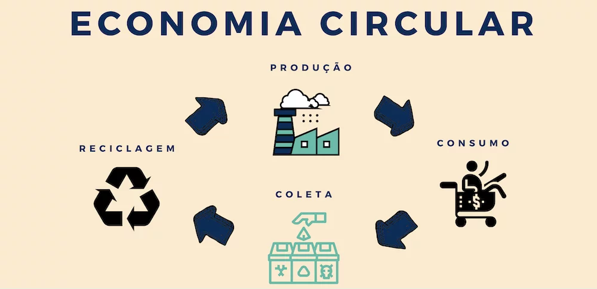

Reciclagem!
Aqui onde voce encontra tudo sobre reciclagem e o seu processo
O que é reciclagem
A reciclagem desempenha um papel crucial na economia, gerando uma série de impactos positivos em várias frentes. Em primeiro lugar, ela cria empregos em diferentes setores, desde a coleta até o processamento e a fabricação de produtos reciclados. Isso contribui para reduzir o desemprego e estimular o crescimento econômico. Além disso, a reciclagem ajuda a economizar recursos naturais, pois reduz a necessidade de extrair matéria-prima virgem, o que pode resultar em economias significativas de custos para as empresas.
Ao mesmo tempo, a reciclagem também contribui para a redução dos custos de gestão de resíduos, uma vez que diminui a quantidade de lixo enviado para aterros sanitários, onde os custos de tratamento e disposição são elevados. Isso libera recursos financeiros que podem ser investidos em outras áreas, beneficiando a economia como um todo. Além disso, a reciclagem pode gerar receita através da venda de materiais recicláveis, como papel, plástico, vidro e metal, criando assim oportunidades de negócios e estimulando o comércio.
Outro aspecto importante é o impacto positivo da reciclagem no meio ambiente. Ao reduzir a quantidade de resíduos enviados para aterros sanitários e incineradores, ela contribui para a preservação dos recursos naturais e a redução da poluição do ar, solo e água. Isso, por sua vez, pode resultar em economias de saúde pública e custos de tratamento médico relacionados à exposição a substâncias tóxicas presentes nos resíduos

Além disso, a reciclagem promove a inovação e o desenvolvimento de novas tecnologias, à medida que as empresas buscam maneiras mais eficientes e sustentáveis de reciclar materiais e fabricar produtos reciclados. Isso pode levar ao surgimento de novos setores industriais e oportunidades de investimento em pesquisa e desenvolvimento
Em resumo, os impactos da reciclagem na economia são amplos e positivos, abrangendo desde a criação de empregos e a geração de receita até a redução de custos, a preservação de recursos naturais e a promoção da inovação e do desenvolvimento sustentável. Investir em programas de reciclagem e promover uma cultura de consumo consciente pode trazer benefícios significativos tanto para a economia quanto para o meio ambiente.